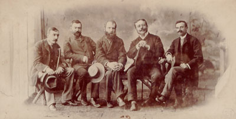

Bem-vindo ao Universo do Realismo Português
O Realismo em Portugal representa uma viragem fundamental na cultura e literatura nacional, emergindo vigorosamente na segunda metade do século XIX, a partir da década de 1860. Este movimento nasceu como uma resposta direta e crítica aos ideais do Romantismo, frequentemente vistos como excessivamente sentimentais e desconectados da complexa realidade social e política da época.
Alimentado por um crescente sentimento de insatisfação com o panorama cultural e político do país, e profundamente influenciado pelas novas correntes filosóficas e científicas que varriam a Europa – como o Positivismo, o Evolucionismo e as teorias sociais emergentes –, um grupo de jovens intelectuais portugueses uniu-se com o propósito de catalisar uma profunda modernização do pensamento e da expressão artística.
O cerne do Realismo era inconfundível: retratar a sociedade portuguesa contemporânea com objetividade, análise crítica e fidelidade. Em contraste com a fuga romântica para o passado histórico ou a exaltação de emoções idealizadas, os realistas focaram seu olhar perspicaz no presente. Seu objetivo era desvendar e expor as complexidades, contradições, e as feridas sociais, políticas e morais que marcavam Portugal naquele período.
Este blog é um convite para explorar as origens, as características distintivas, os protagonistas e o legado duradouro deste movimento que não apenas renovou a literatura, mas também propôs uma nova forma de enxergar e questionar a identidade portuguesa.